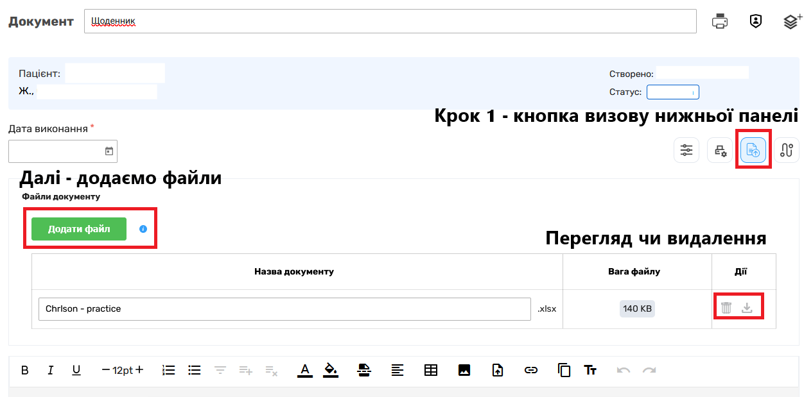
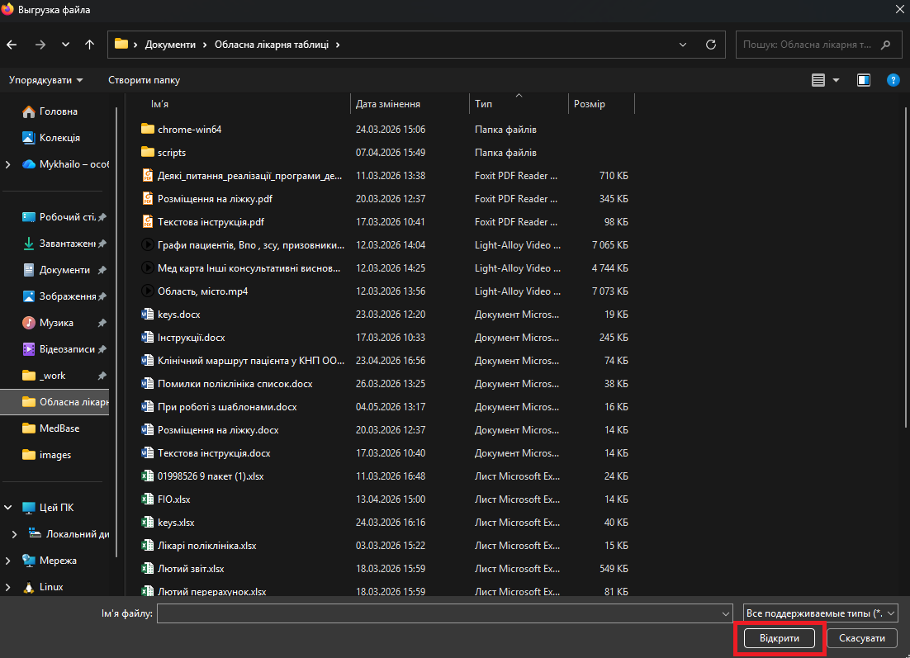
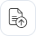

При роботі з шаблонами ви маєте можливість додавати додаткові документи для зберігання в історії хвороби пацієнта. Це може бути скан зовнішньої довідки, результат дослідження або будь-який інший супровідний файл у підтримуваному форматі.
Система підтримує наступні формати: WORD (.doc, .docx), PDF та Excel (.xls, .xlsx). Файли інших форматів система не прийме.


Покрокова інструкція
-
1
Коли ви працюєте з шаблоном, натисніть на кнопку додавання
файлу

— після цього внизу екрана з'явиться секція «Файли документу» та зелена кнопка «Додати файл». - 2 Натисніть на кнопку «Додати файл» — відкриється вікно провідника, в якому потрібно знайти місце, де зберігається файл: на флешці або жорсткому диску комп'ютера.
- 3 Знайдіть потрібний файл та натисніть кнопку «Відкрити». Система підтримує формати WORD, PDF, XLS та XLSX.
- 4 Щоб переглянути завантажений файл, у графі «Дії» є значок перегляду . Там само розташований значок видалення — для видалення небажаного або доданого випадково файлу.
- 5 Після додавання файлу натисніть «Зберегти», а за потреби також «Підписати» — для збереження всіх виконаних операцій у системі, включно з доданими файлами.
Якщо не натиснути «Зберегти» після додавання файлу — всі зміни буде втрачено при закритті шаблону. Завжди завершуйте роботу збереженням, а за необхідності — підписом.
До одного шаблону можна додати кілька файлів — повторіть кроки 2–4 для кожного додаткового документа перед фінальним збереженням.